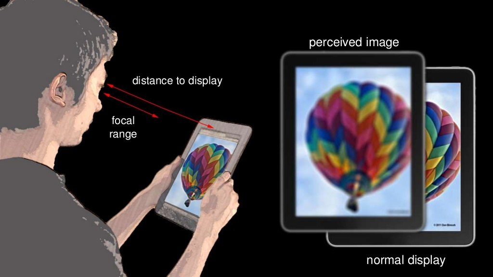
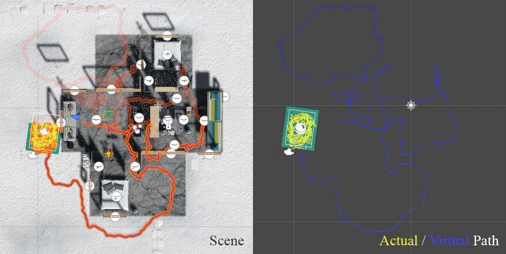

Project

Vision Correcting Display
Vision Correcting Display is my capstone project at UC Berkeley. The purpose of the project is to design a digital display that appear clearly for people with visual problems. I am currently working on improving the method with a more precise eye model.
- Graphics, Vision Science

Infinite Walking in VR
Infinite Walking is a group project I did at UC Berkeley. The objective of this project is to design and develop a VR program that allows users to freely explore a virtual scene that is considerably larger than a room- scaled tracked space. My teammates and I propose a software system of redirected walking (RDW) techniques combined with a user interface (UI) to avoid user-obstacle collisions.- HCI, Unity, VR

Flappy Fish
Flappy Fish is a game project I did as a special study at Smith College. I implement logistic regression and design the game based on MVC framework. The game takes handwritting as input and transform recognition results for interaction.- Game Design, Machine Learning, Java